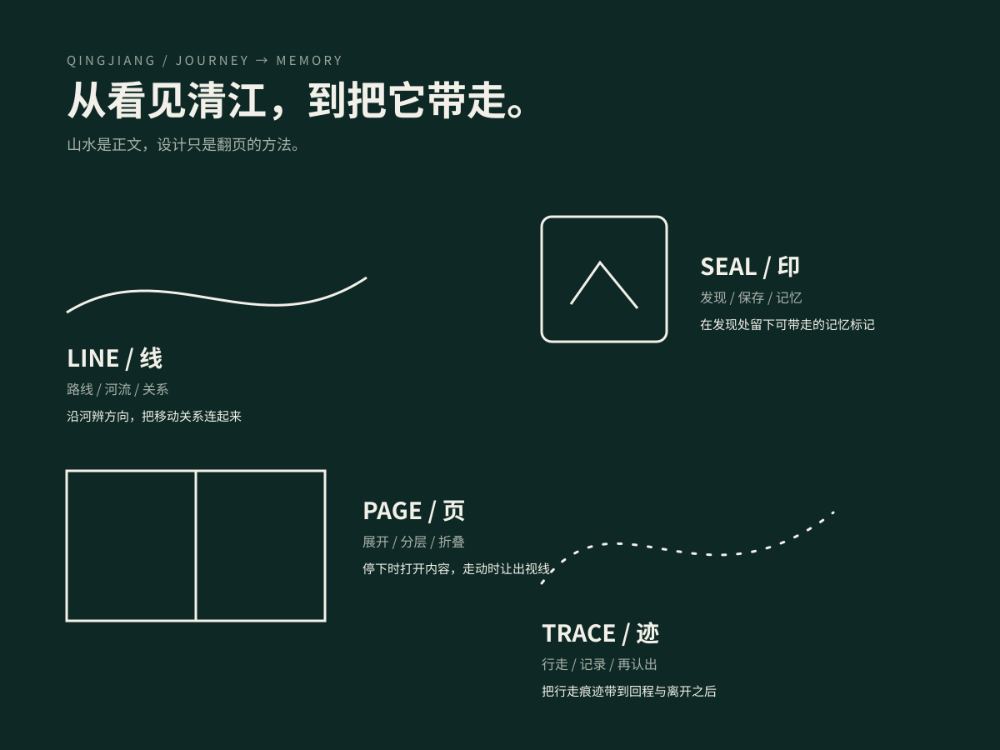
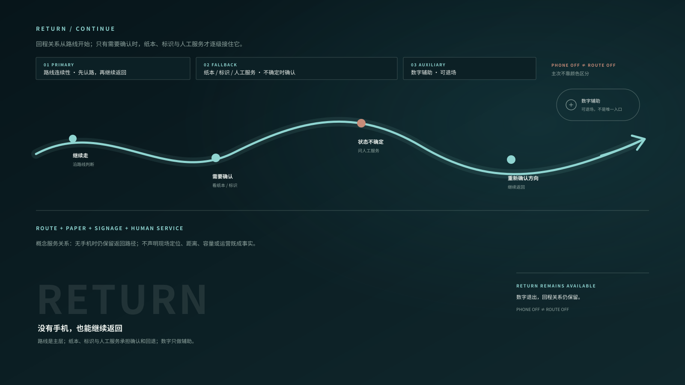

01
QINGJIANG STONE BOOK · EXPERIENCE DESIGN
清江石书
先游清江，
再读清江。
水上看，空中看，山中走；需要时，再打开一页清江。
游船索道步行回程
02
PROJECT / ONE JOURNEY, MANY LAYERS
一段清江游程，
连接观看、行走与记忆。
从游船、索道到步行，十三印、数字陪伴、身体支持、视觉识别与记忆系统都嵌在同一段游程里；它们只在需要时出现，不替代真实清江。
继续看完整设计范围 从体验到技术证明
项目定义问题与机会场地与山水地域文化人群与状态游程与行为设计原理设计方法总体体验系统路线/交通/服务十三印数字陪伴关键场景实体/身体/感官品牌与视觉识别记忆/IP/文化产品设计深化技术/模型/工程证明方案演化/判断开放项/回程/结尾
03
PROJECT / JOURNEY
同一条清江，
从三个尺度重新认识。
BOAT / OPEN
先完整地看见清江。
水面把峡谷、峰林、岸线和行进距离同时拉开。设计在这里降低解释密度，让真实景观成为第一信息层。
04
WHY / EXPERIENCE PRIORITY
先把人放回清江，
再谈设计。
01真实清江 · 路线 · 身体
先确认人在什么景观、什么移动方式、什么身体状态里。
02服务 · 回程
能否走、如何退、何时休息，比内容完成度更优先。
03十三印 · 可选阅读
内容是一页页被打开，不强迫游客完成。
04数字 · 识别
数字工具提供方向与深度，也必须能够主动退场。
05记忆
旅程不以积分结束，而以重新认识清江结束。
05
QINGJIANG / CONDITIONS → EXPERIENCE
河谷、速度、人和退路，
决定内容什么时候出现。
山水关系
河谷、峰林、两岸与开合变化决定观看距离与解释密度。
→ 景观强时，说明退后地域内容
地名、故事、植物、山水知识与地方文化按场景适配，而非平均铺设。
→ 只在相关场景打开这一页移动与服务
游船、索道、步行拥有不同速度、视域、停留与返回压力。
→ 水上、空中、山中使用不同密度不同的人
儿童、青年、深读者、低体力人群在同一场景需要不同深度与支持。
→ 同一场景提供不同深度与支持注意与行为
看、比、寻、听、等、框、望、辨、随、过、记、回、留。
→ 阅读从看、寻、听、过这些动作发生状态与退路
NORMAL / DEGRADED / CLOSED / UNKNOWN 与 FULL / LIGHT / OFF。
→ 状态变化时，先保住路线与回程06
AUDIENCE / SAME SCENE, DIFFERENT DEPTH
不为不同人复制产品。
改变的是深度与支持。

FAMILY / EASY EXIT
少读一点，也能完整经过。亲子场景优先短动作、低文字与清楚退出；不把深读变成同行压力。07
WHAT APPEARS / WHAT STEPS BACK
什么时候出现，什么时候退后，
设计有清楚的次序。
- 景观先出现先看山水与身体关系，再补解释。
- 先确认能走、能回路线、恢复与回程优先于内容完成。
- 同一条清江，三种尺度水上看整体，空中看关系，山中进入细部。
- 十三印可以不读完内容可按兴趣打开，但不成为路线权威。
- 信息密度跟着场景变化不同场景分配不同界面、文字与互动密度。
- 数字可以退场需要时出现；景观更强时主动让开。
- 实体只在真正需要时介入身体、恢复、阅读或回程有需求时才出现。
- 同一场景，不同深度通过阅读深度与支持强度回应不同人群。
- 先看，再揭示关系尤其 R06：先完整景观，再进入关系与深读。
- 最后留下的是记忆以重新认识清江结束，而不是追求 13/13 完成率。
08
FROM WHAT IS HERE → TO WHAT THE DESIGN DOES
先看现场关系，
再决定设计做什么。
WHAT IS HERE眼前有什么
→WHAT IT CHANGES它改变了什么
→WHAT THE DESIGN DOES设计因此怎么做
先让山水完整出现；当关系需要被看见时，再进入揭示与可选深读。
移动速度、注意力和人群状态共同决定界面、文字与互动密度。
路线、纸本、标识、数字与人工服务彼此补位，让方向、回程与记忆不依赖单一入口。
可用性下降或 UNKNOWN 时减少承诺，保留最小可走路径、人工确认与回程。
09
SYSTEMS / FROM JOURNEY TO SUPPORT
先看路线，
再看系统怎样接住游程。
路线是所有系统共同工作的骨架：十三印在沿途提供可选深读，数字负责方向与状态，身体支持负责停、靠、看与恢复，识别与记忆把经历延续到离场之后。

01路线与回程
先知道往哪里走、何时返回；无手机时仍保留纸本、标识与人工确认。
02十三印
13 次可选阅读嵌入游程，不把阅读完成率变成路线权威。
03数字陪伴
提供路线、状态与深读入口；景观更强或设备不可用时主动退场。
04身体支持
只在停留、恢复、阅读与回程真正需要时介入。
05识别与记忆
地图、字体、图形、旅记与“我的石书”把同一套关系延续到跨媒介和离场之后。
09B
BRAND / VISUAL IDENTITY SYSTEM
识别不是盖在清江上的标志。
它跟着路线出现，也知道什么时候退后。
LINE / PAGE / SEAL / TRACE 把同一套识别关系带进路线、纸本、数字与记忆；景观和身体注意力更强时，Brand Presence 从 LIGHT 降到 TRACE，必要时 OFF。

01LINE
路线的连续性转译为版面与信息图的主线，不把路线本身改成品牌图案。
02PAGE
纸页和数字页签承接“按需打开”的阅读逻辑，内容不必持续覆盖现场。
03SEAL
印记作为记忆锚点，只在发现与记录发生时增强，不变成 13/13 打卡证明。
04TRACE
高景观、高身体注意力场景只保留痕迹；R13 / Return 可直接 OFF。

09C
MEMORY / IP / AFTER LEAVING
记忆不是完成证明。
它让游客带走自己的那一页清江。
“清江旅记”与“我的石书”都以个人痕迹为核心：可以写、圈、夹、留白，也可以什么都不记录；离场后的延续不重新制造任务完成率。
01圈一个停留
路线只留下个人痕迹，不统计十三印完成率。
02写一句话
把记忆交还给游客自己的语言，而不是统一答案。
03夹入自己的东西
纸本允许票据、叶片或空白成为私人记录；无手机仍成立。
04什么都不记录
记忆系统允许退出；不记录也不影响完整游程和回程。

10
DEVELOPMENT / R06 TECHNICAL RELATION
先看它怎样被使用，
再看排水、连接与维护。
R06 的技术表达先回答一个具体问题：一个短时倚靠点如何在不截断连续通过与回程的前提下，留下排水、连接和检修余地。图中关系用于设计深化，不替代现场与工程验证。

01使用关系
短时借力发生在连续路径一侧；停、靠、看之后仍能继续走或返回。
02排水与边缘
接触面先排水，再把边缘、缝隙与下部连接留成可检查、可清理的关系。
03连接与维护
可替换接触层、主支撑体、连接区与检修动作分层，避免把维护藏进不可达位置。
04验证边界
概念技术关系 · NTS；FIELD OBSERVED=0 · FIELD MEASURED=0 · G1F HOLD · NO_PROMOTION。结构、基础、安全与施工做法仍待专业验证。
当前位置R13 · 收束通过路线持续 · 内容退场
R13 / PASSAGE ATTENTION
走进收束处，
内容先退场。
R13 不再增加一层解释，而是把注意力还给脚下、身体与通过本身。只有走出收束、重新获得余裕后，内容才允许回来。
- 01接近还能看见轻提示
- 02收束说明开始退场，只留下方向
- 03通过先顾脚下与身体
- 04回看走出后，想看时再打开

11
LEAVE / RECOGNIZE / RETURN
不是完成十三页。
是再次认出清江。
数字可以退场，十三印可以跳过，身体可以先休息，路线始终允许回程。离开时留下的不是“全部打卡”，而是重新认出自己刚刚经过的山、水、路与关系。

SERVICE / RETURN
回程不是结尾按钮。它从一开始就在系统里。
MEMORY / PAPER JOURNAL
带走一页自己的清江，不是带走完成率。纸页可以写、折、夹、留白；路线只留下个人痕迹，不把十三印重新变成任务。
设计与验证边界
现场观察、现场测量与工程验证仍保持开放；本页不把远程研究写成现场事实。